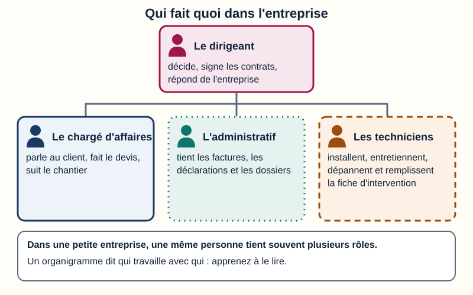
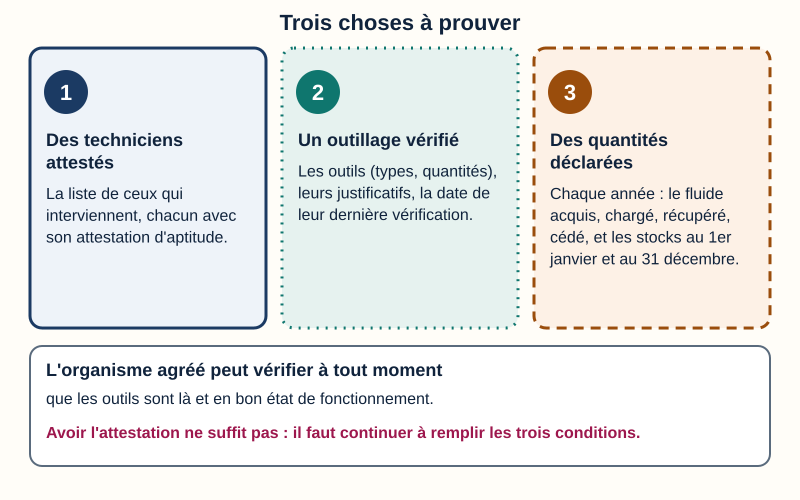
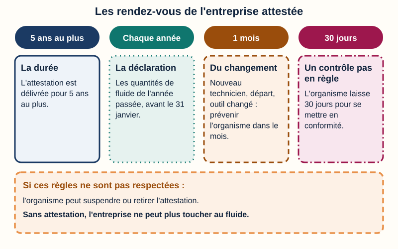
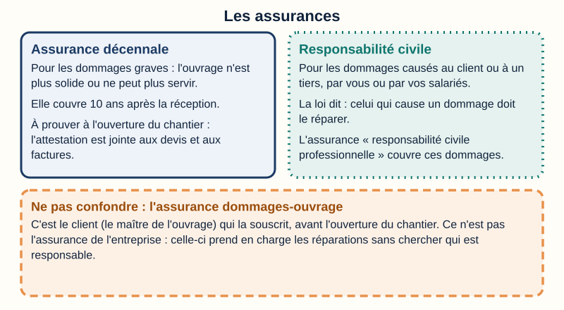
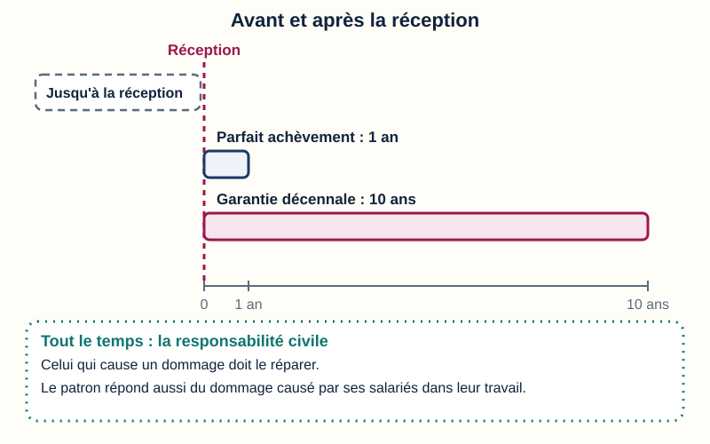
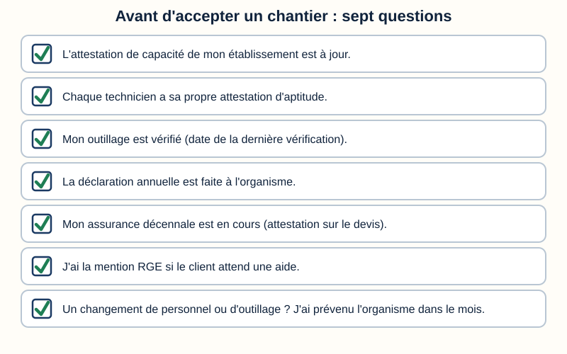

L'entreprise du froid : ce qu'il faut pour intervenir
Mini-station commentée · 8 écrans et 4 questions · environ 12 minutes
Objectif
À la fin de la station, vous savez dire qui fait quoi dans une entreprise du froid, ce qu'elle doit avoir pour toucher à un fluide (l'attestation de capacité, des techniciens attestés, un outillage vérifié), ce qu'elle doit faire chaque année, quelles assurances elle doit avoir, à quoi servent les qualifications (RGE, QualiPAC, Qualifroid) et qui répond de quoi après un chantier.
Sert notamment pour
TP TECVC, REAC TP-00133 : hors REAC (culture professionnelle du technicien et du chargé d'affaires)
Bac Pro MFER (2028) : savoirs S1.1 « l'entreprise » et S1.5 « les qualifications, garanties et responsabilités »
Chaque écran peut être expliqué à voix haute : le bouton « Écouter » commente ce que vous voyez. Rien n'est dit qui ne soit aussi écrit.
1 / 12
Écran 1 sur 8
Une entreprise du froid : qui fait quoi
Une entreprise du froid vend, installe et entretient des machines chez des clients. Pour s'y retrouver, on dessine un organigramme : un schéma qui montre qui fait quoi.
Le dirigeant décide, signe les contrats et répond de l'entreprise.
Le chargé d'affaires parle au client, fait le devis et suit le chantier.
L'administratif tient les factures, les déclarations et les dossiers.
Les techniciens installent, entretiennent, dépannent, et remplissent la fiche d'intervention.
Dans une petite entreprise, une même personne tient souvent plusieurs rôles. À vous de lire l'organigramme de votre entreprise d'accueil : qui fait quoi ?

Des fonctions types : chaque entreprise a son propre organigramme.
Écran 2 sur 8
Pour toucher à un fluide : l'attestation de capacité
L'entreprise qui touche au fluide frigorigène s'appelle un opérateur. Pour intervenir (mise en service, entretien, réparation, contrôle d'étanchéité, récupération du fluide), elle doit avoir une attestation de capacité (article R. 543-99 du Code de l'environnement).
Elle est délivrée par un organisme agréé, pour chaque établissement de l'entreprise, pour 5 ans au plus.
Un organisme agréé est un organisme que le ministre chargé de l'environnement a autorisé à délivrer ces attestations (article R. 543-108).
Elle précise les types d'équipements et d'activités permis.
Le client (le détenteur de l'équipement) doit faire appel à un opérateur attesté, et il peut en demander une copie (article R. 543-78).
Sans attestation : contravention de la 5e classe (article R. 543-123).
À savoir
Un arrêté du 21 novembre 2025 fixe désormais le détail de la délivrance. Il est obligatoire le 1er janvier 2027 et remplace celui du 30 juin 2008. La station « Aptitude & capacité » donne le reste.

Une entreprise sans attestation de capacité ne peut pas toucher au fluide.
Écran 3 sur 8
Ce que l'entreprise doit prouver
Des techniciens attestés. Les personnes qui font les opérations sous la responsabilité de l'entreprise doivent chacune avoir une attestation d'aptitude (article R. 543-106), délivrée à la personne par un organisme certifié, après une évaluation. L'aptitude est à la personne, la capacité est à l'entreprise : il faut les deux.
Un outillage vérifié. Le dossier liste les outils : types, quantités, justificatifs, date de la dernière vérification (arrêté du 21 novembre 2025, article 1). L'organisme peut vérifier à tout moment qu'ils sont là et en bon état (article R. 543-103).
Des quantités déclarées. Chaque année, l'entreprise déclare à l'organisme les quantités de fluide acquises, chargées, récupérées et cédées, et ses stocks (article R. 543-100).
L'attestation de capacité de l'entreprise ne couvre pas un technicien qui n'a pas encore la sienne : l'aptitude est à la personne, elle ne se prête pas.

Trois conditions, à remplir tout le temps.
Écran 4 sur 8
Après l'attestation : déclarer, prévenir, être contrôlé
Chaque année : la déclaration à l'organisme (arrêté du 21 novembre 2025 : au plus tard le 31 janvier).
Un changement de personnel ou d'outillage : l'organisme est prévenu dans le mois (article R. 543-102).
Un contrôle : l'organisme peut venir. Si l'entreprise n'est plus en règle, il lui laisse 30 jours pour se mettre en conformité, sinon il retire l'attestation (arrêté du 21 novembre 2025, article 3).
Pas de déclaration : l'organisme peut suspendre l'attestation (article R. 543-101). Les conditions ne sont plus remplies : il peut la retirer (article R. 543-104).

Quatre rendez-vous, un mot d'ordre : rester en règle.
Écran 5 sur 8
Les assurances
L'assurance décennale : toute entreprise dont la responsabilité décennale peut être engagée doit être assurée, et le prouver à l'ouverture de tout chantier (Code des assurances, article L. 241-1). L'attestation d'assurance est jointe aux devis et aux factures (article L. 243-2).
La responsabilité civile : celui qui cause un dommage à autrui doit le réparer (Code civil, article 1240). Une assurance « responsabilité civile professionnelle » couvre ces dommages.
La dommages-ouvrage : c'est le client (le maître de l'ouvrage) qui la souscrit, avant l'ouverture du chantier (article L. 242-1).
La décennale et la responsabilité civile se souscrivent auprès d'un assureur, qui délivre l'attestation d'assurance.

La décennale se prouve avant le chantier ; la dommages-ouvrage est celle du client.
Écran 6 sur 8
Les qualifications : ne pas tout mélanger
Une qualification est un papier qui dit qu'une entreprise sait faire un type de travaux. Aucune ne remplace l'attestation de capacité.
L'attestation de capacité : montre que l'entreprise a le droit de toucher au fluide. Délivrée par un organisme agréé.
RGE (« reconnu garant de l'environnement ») : montre que le client peut toucher certaines aides, pour ces travaux. Délivrée par des organismes de qualification ou de certification (Qualibat, Qualit'EnR, Qualifelec…). Elle se vérifie dans l'annuaire officiel.
QualiPAC : une qualification RGE pour les pompes à chaleur, délivrée par Qualit'EnR.
Qualifroid et Qualiclima : des qualifications d'entreprise du froid et de la climatisation, délivrées par Qualiclimafroid. Le référentiel de formation les cite comme exemples de qualifications d'entreprise.
Pour aller plus loin : la station « RGE & QualiPAC ».
Quatre papiers, quatre rôles : un seul est indispensable pour toucher au fluide.
Écran 7 sur 8
Qui répond de quoi
La réception : le client (le maître de l'ouvrage) déclare accepter l'ouvrage, avec ou sans réserves. Tout se compte à partir de là (Code civil, article 1792-6).
Parfait achèvement : 1 an. L'entreprise répare tous les désordres signalés par le client, dans les réserves du procès-verbal ou par écrit (article 1792-6).
Décennale : 10 ans. Pour les dommages qui compromettent la solidité de l'ouvrage ou le rendent impropre à sa destination (articles 1792 et 1792-4-1).
Responsabilité civile : celui qui cause un dommage doit le réparer. Le patron répond aussi du dommage causé par ses salariés dans leur travail (articles 1240 et 1242).
Pour aller plus loin : la station « Les garanties ».

Un an, dix ans : la même échelle, depuis la réception.
Écran 8 sur 8
Bilan : la check-list de l'entreprise
L'attestation de capacité de l'établissement est à jour.
Chaque technicien a sa propre attestation d'aptitude.
L'outillage est vérifié, et la date est notée.
La déclaration annuelle est faite à l'organisme.
L'assurance décennale est en cours : l'attestation part avec le devis.
La mention RGE est là si le client attend une aide.
Un changement de personnel ou d'outillage : l'organisme est prévenu dans le mois.
Le réflexe : qu'est-ce que mon entreprise peut montrer au client ?

Sept questions avant d'accepter un chantier.
Question 1 sur 4
Une entreprise veut recharger la climatisation d'un client. Qu'est-ce qui lui est obligatoire ?
Rappel de l'écran 2 — l'attestation de capacité.
Question 2 sur 4
L'entreprise a l'attestation de capacité. Un technicien débutant, sans attestation d'aptitude, peut-il recharger seul ?
Rappel de l'écran 3 — les trois conditions.
Question 3 sur 4
Un technicien attesté quitte l'entreprise. Que doit faire l'entreprise ?
Rappel de l'écran 4 — prévenir dans le mois.
Question 4 sur 4
À quel moment l'entreprise doit-elle prouver qu'elle a l'assurance décennale ?
Rappel de l'écran 5 — la décennale se prouve avant le chantier.
Les correspondances de la station
Aptitude & capacité (sous-ligne Fluidique & thermique) — les deux papiers du fluide : la personne et l'entreprise, et la remise à niveau tous les 7 ans.